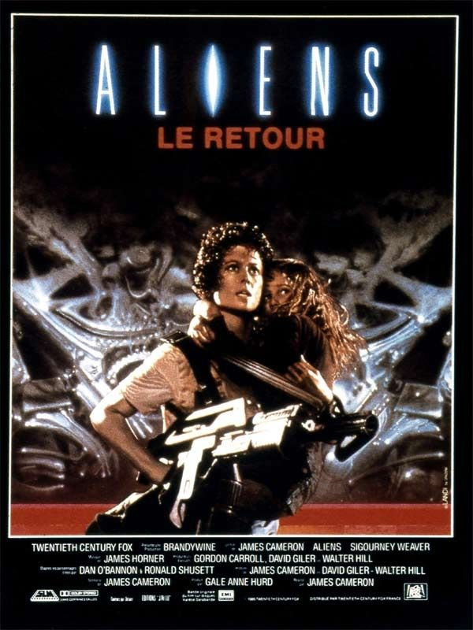
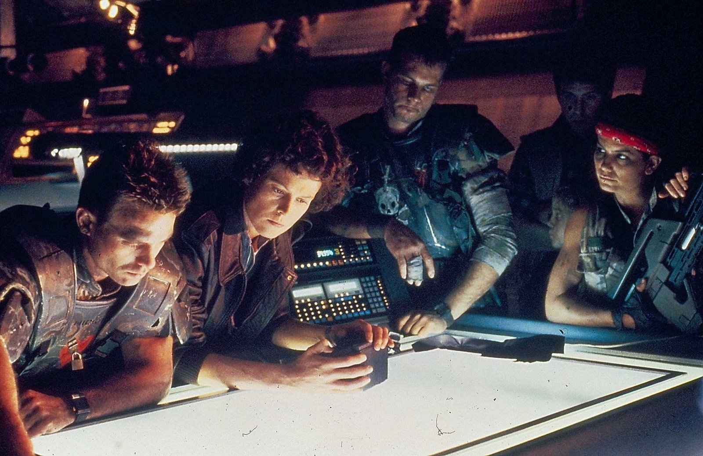

Celui-là, ce sont mes parents qui avaient acheté la cassette.
J'avais déjà vu le premier Alien. Mais à l'école, un copain ne parlait que de la suite. Alors un soir, je me suis lancé.
Et ce n'était plus du tout le même film.
Ripley n'était plus une survivante qui fuit dans les couloirs. C'était une femme qui ne lâche rien, qui fait face, qui avance quand tout le monde recule. Autour d'elle, des décors encore plus sombres, des couloirs noyés de vapeur, et cette fois, ce n'était plus une seule créature. C'était une horde entière, guidée par une reine.
Et puis il y a ce moment que je n'ai jamais oublié. Ripley qui sort de l'ombre, sanglée dans un exosquelette de chargement, face à la reine. Et cette phrase, lancée droit dans les yeux du monstre : « Get away from her, you bitch! »
Une action qui prend aux tripes, du début à la fin.
Ce soir, cette fois, c'est la guerre.

Aliens, le retour — affiche française, 1986
Aliens, le retour.
1986. Réalisé par James Cameron. Avec Sigourney Weaver, Michael Biehn, Lance Henriksen, Bill Paxton, Carrie Henn, Paul Reiser et Jenette Goldstein.
Sept ans après le premier film, la saga change de mains et de nature. Ridley Scott avait signé un film d'horreur, lent, silencieux, enfermé dans les coursives d'un vaisseau. James Cameron, qui vient de révéler son talent avec Terminator, choisit l'inverse : un film de guerre.
Ellen Ripley, seule survivante du Nostromo, est retrouvée à la dérive dans l'espace après cinquante-sept ans d'hibernation. Personne ne croit à son histoire. Pendant tout ce temps, la planète où tout a commencé a été colonisée par des familles entières. Et un jour, la colonie cesse de répondre.
Ripley y retourne, cette fois accompagnée d'une unité de marines coloniaux surarmés, sûrs d'eux et persuadés qu'il ne s'agit que d'une simple mission de nettoyage.
Sur l'affiche, une phrase résume le changement de ton : « Cette fois, c'est la guerre. »
C'est la deuxième vision de la saga. Une seule créature tapie dans l'ombre devient une armée entière. Mais au milieu de l'action, Cameron glisse quelque chose que le premier film n'avait pas : le cœur d'une mère.
En 1983, James Cameron n'est encore qu'un jeune réalisateur sans succès à son nom. Il a écrit Terminator, mais le tournage est repoussé de plusieurs mois, le temps qu'Arnold Schwarzenegger termine ses engagements sur Conan le Destructeur.
Cameron met ces mois d'attente à profit. Il écrit en parallèle deux scénarios de suite : Rambo II, et une suite d'Alien. Les producteurs du premier film, Walter Hill et David Giler, sont séduits par ses premières pages. Mais la Fox attend de voir.
Terminator sort en 1984 et devient un succès surprise. Cameron obtient alors les clés d'Aliens, avec à ses côtés la productrice Gale Anne Hurd, qui avait déjà produit Terminator.
Sigourney Weaver accepte de revenir. Cette fois, Ripley est le cœur absolu du film. Autour d'elle, Cameron réunit une troupe de marines aux personnalités marquées. Il recrute plusieurs fidèles de Terminator : Michael Biehn, Lance Henriksen et Bill Paxton. Et pour jouer Newt, la petite fille survivante de la colonie, il choisit Carrie Henn, une enfant qui n'avait jamais joué au cinéma.
Le tournage se déroule en Angleterre, aux studios de Pinewood, pour un budget d'environ dix-huit millions de dollars. Une ancienne centrale électrique désaffectée, à Londres, sert de décor à la station atmosphérique de la colonie. Ses tuyaux, ses passerelles et ses salles de machines donnent au film son atmosphère industrielle.
Pour les créatures, Cameron fait appel à Stan Winston, déjà responsable de Terminator. Son équipe construit une reine de plusieurs mètres de haut, manipulée par des câbles, des vérins hydrauliques et des marionnettistes cachés. L'exosquelette de chargement que pilote Ripley est lui aussi bien réel, actionné par un cascadeur placé derrière Sigourney Weaver.
La musique est confiée à James Horner, qui doit la composer en quelques semaines à peine, sous une pression énorme.
Aliens sort aux États-Unis en juillet 1986. Le film recevra sept nominations aux Oscars, dont celle de la meilleure actrice pour Sigourney Weaver : une reconnaissance très rare, à l'époque, pour un film de science-fiction et d'action.

Hicks, Ripley et les marines coloniaux préparent l'assaut
Une navette de sauvetage dérive dans l'espace. À l'intérieur, une femme endormie : Ellen Ripley, seule survivante du Nostromo.
Quand on la réveille, elle apprend qu'elle a dormi cinquante-sept ans. Le monde a continué sans elle. La compagnie qui l'employait lui reproche d'avoir détruit son vaisseau, et personne ne croit à son histoire de créature.
Pire encore : la planète où l'équipage du Nostromo avait trouvé les œufs, LV-426, est désormais habitée. Une colonie de familles entières y vit depuis des années.
Et un jour, la colonie cesse de répondre.
La compagnie envoie une unité de marines coloniaux, des soldats surentraînés, bardés d'armes et sûrs de leur force. Elle demande à Ripley de les accompagner comme conseillère. Hantée par ses cauchemars, elle accepte, à une condition : cette fois, ils ne reviendront pas pour étudier la créature, mais pour la détruire.
Sur place, la colonie est déserte. Les couloirs sont vides, les traces de combat partout. Une seule survivante les attend, cachée dans les conduits : une petite fille, Newt.
Très vite, les marines comprennent qu'ils n'affrontent pas un seul monstre. Et que toute leur puissance de feu ne pèsera pas lourd face à ce qui les attend dans l'ombre.
Une femme qui retourne affronter son pire cauchemar, une enfant à protéger, et une question qui traverse tout le film : peut-on vaincre une peur en allant la chercher soi-même ?
Aliens est sans doute la suite la plus audacieuse de l'histoire du cinéma de genre. James Cameron ne copie pas Ridley Scott, il change de genre. Le film d'horreur devient un film de guerre, et pourtant la peur reste intacte.
Le premier choix de Cameron, c'est le rythme. Il prend son temps : près d'une heure s'écoule avant le premier véritable affrontement. Il installe la colonie déserte, les marines arrogants, les détecteurs de mouvement qui bipent dans le silence. Quand l'action éclate, elle est d'autant plus violente. Et une fois lancée, elle ne retombe presque plus. C'est cette montée en tension, puis cette course sans répit, qui prend aux tripes.
Le deuxième choix, c'est le nombre. Dans le premier film, une seule créature suffisait à terrifier. Ici, elles sont des dizaines, organisées comme une ruche autour d'une reine. Cameron invente toute une société extraterrestre, et la menace change d'échelle. Les marines, avec leur équipement et leurs certitudes, découvrent que leur puissance ne sert à rien.
Le troisième choix, c'est Ripley. La survivante du premier film devient une combattante qui ne lâche rien. Mais Cameron ne fait pas d'elle une machine de guerre. Sa force vient de Newt, la petite fille qu'elle prend sous sa protection. Aliens devient alors l'histoire de deux mères qui s'affrontent : Ripley, qui protège une enfant qui n'est pas la sienne, et la reine, qui défend sa progéniture. Le duel final dans l'exosquelette n'est pas qu'un morceau de bravoure, c'est l'aboutissement de cette idée.
Autour d'elle, les personnages secondaires sont devenus cultes : Hudson, le marine fanfaron qui panique, Vasquez, la plus dure de l'unité, Hicks, calme et loyal, Bishop, l'androïde dont Ripley se méfie, et Burke, le représentant de la compagnie, plus inquiétant que les créatures.
Les décors sombres, la vapeur, les lumières clignotantes, les effets de Stan Winston et la musique martiale de James Horner donnent au film une puissance physique qui n'a presque pas vieilli.
Alors, qu'est-ce que cette deuxième vision change à la saga ? Tout, sauf l'essentiel. Le premier film disait : « personne ne vous entend crier ». Le second répond : cette fois, on se bat.

Ripley, lance-flammes au poing, dans les couloirs de la colonie
Aliens n'a jamais eu besoin d'être redécouvert. Dès sa sortie, en 1986, il s'impose comme un événement.
Le succès est immédiat : plus de cent trente millions de dollars de recettes dans le monde. La critique, souvent méfiante envers les suites, salue un film qui ne se contente pas de copier l'original. Les sept nominations aux Oscars confirment le phénomène. Le film en remportera deux, pour les effets visuels et le montage sonore, et la nomination de Sigourney Weaver comme meilleure actrice fait date. Une héroïne de film d'action et de science-fiction reconnue comme une grande interprète, c'était presque une première.
Aliens a ensuite façonné toute une culture. Ses marines coloniaux, avec leurs armures, leurs fusils, leurs détecteurs de mouvement et leurs répliques fanfaronnes, deviennent un modèle. On les retrouve, à peine déguisés, dans des dizaines de films, de bandes dessinées et surtout de jeux vidéo, de Doom à Halo. La réplique d'Hudson, « Game over, man! », fait le tour du monde.
Ripley, elle, devient une icône. Avec Sarah Connor dans Terminator 2, qu'on a vue dans la saison précédente, elle invente la figure de l'héroïne d'action moderne : forte, déterminée, mais jamais dépouillée de son humanité.
Avec le temps, le film a même gagné en profondeur. Sa version longue, sortie quelques années plus tard, réintègre une scène coupée qui change le regard sur Ripley : pendant ses cinquante-sept ans d'hibernation, sa propre fille a vieilli et est morte sans elle. Son lien avec Newt prend alors tout son sens.
Reste un débat qui n'a jamais été tranché : Alien ou Aliens ? L'horreur pure de Ridley Scott ou la guerre de James Cameron ? Que deux films d'une même saga puissent être considérés, chacun, comme le meilleur, c'est peut-être la plus belle preuve qu'Aliens est devenu un classique.
Une suite qui n'a pas vécu dans l'ombre de l'original. Elle s'est installée à côté de lui.
Parce qu'on croit le connaître par ses répliques et ses images, et qu'on oublie à quel point il est construit avec précision.
Revoir Aliens aujourd'hui, c'est mesurer la maîtrise de James Cameron. Chaque séquence prépare la suivante. Le détecteur de mouvement qui bipe de plus en plus vite, les sentinelles automatiques qui comptent leurs munitions, le compte à rebours de la station : Cameron fabrique la tension avec des objets, des chiffres, des sons. On sait exactement où l'on est, et ce qui nous menace. C'est ce qui rend l'action si physique, si viscérale.
Parce que tout a été fait pour de vrai. La reine est une gigantesque marionnette mécanique, l'exosquelette est un vrai engin, les décors sont construits et noyés de vapeur. Pas d'images de synthèse : seulement de l'artisanat, de l'ombre et de la lumière. Quarante ans plus tard, le combat entre Ripley et la reine reste aussi impressionnant qu'à l'époque.
Parce que Ripley y est au sommet. Une femme qui ne lâche rien, qui affronte ses cauchemars au lieu de les fuir, et qui trouve sa force dans le lien avec une enfant. Enfant, je la voyais comme une héroïne badass. Adulte, j'y vois aussi une mère qui refuse de perdre une deuxième fois.
Parce que les personnages secondaires ont une vie, une voix, une personnalité. Hudson, Vasquez, Hicks, Bishop, Burke : chacun reste en mémoire, même avec quelques minutes à l'écran.
Et parce qu'Aliens répond à sa manière à la question de cette saga : comment poursuivre un chef-d'œuvre sans le copier ? En changeant de genre, de rythme, d'échelle, tout en gardant la même héroïne et la même créature.
C'est la deuxième vision. Celle de l'action, de la guerre, et d'une femme qui se bat pour une enfant.
Aliens n'a pas cherché à refaire Alien. Il a pris le même monstre et la même héroïne, et en a fait autre chose.
Là où Ridley Scott filmait le silence et l'ombre, James Cameron filme le bruit, la peur collective, la guerre. Une créature devient une armée, une survivante devient une combattante, et au cœur de ce chaos naît une histoire de mère et d'enfant.
Tout le monde se demande lequel des deux est le meilleur.
Je n'ai jamais vraiment su répondre.
Ce que je sais, c'est qu'un jour, à l'école, un copain m'a parlé de ce film comme d'une légende. Que mes parents avaient la cassette à la maison. Et qu'un soir, je me suis lancé.
Je me souviens des couloirs noyés de vapeur, de la horde qui sortait des murs, de la reine immense dans son nid. Je me souviens surtout de Ripley, sanglée dans son exosquelette, qui sort de l'ombre et lance sa phrase au visage du monstre.
À cet âge-là, je ne savais pas ce qu'était une suite réussie. Je savais seulement que j'avais le cœur qui battait à cent à l'heure.
C'était la deuxième vision de la saga. Deux autres réalisateurs allaient encore s'emparer du cauchemar.
La cassette est dans le lecteur. On rembobine.
Titre original
Aliens
Pays
États-Unis · Royaume-Uni
Genre
Science-fiction / Action
Durée
137 min
Producteurs
Gale Anne Hurd · 20th Century Fox
Avec aussi
Lance Henriksen · Bill Paxton · Carrie Henn
Musique
James Horner
Fil conducteur
Saga Alien — Deuxième vision : James Cameron
SOMEDAY — SAGA ALIEN EP. 02